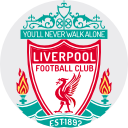

Slot and Hughes Press Conference Recap
Arne Slot praises Klopp's impact at Liverpool, emphasizing his playing style and trophy success
Acknowledges increasing competition in the Premier League and the need for Liverpool to continually improve
Richard Hughes discusses his transition to Liverpool and plans for the transfer window
Expresses openness to developing young players if they meet the required standards
Immediate priorities include getting to know the team, implementing playing style, and assessing improvements needed
Slot prefers collaborative decision-making on transfers, similar to his European coaching experiences
Slot declines to disclose specific advice from Klopp but appreciates fan support and looks forward to facing top Premier League managers
Hughes expects a calm July in the transfer market before potential activity picks up in August
